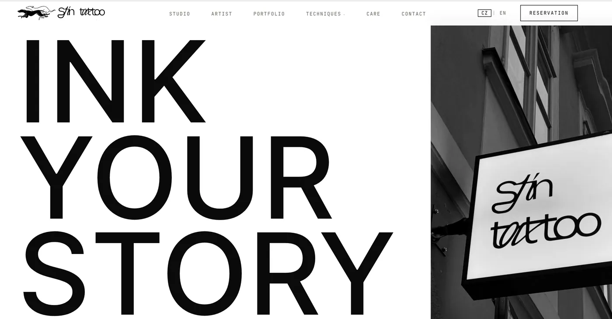

Tworzenie stron internetowych
Strony nastawione na zapytania, budowane statycznie: szybkie, czytelne dla wyszukiwarek i łatwe do rozbudowy. Najpierw strategia i UX, potem piksele.
Strony WWW w PoznaniuUX / UILanding pageCore Web Vitals
Agencja SEO · Poznań
imarket2web to jednoosobowa agencja SEO i studio stron internetowych w Poznaniu, prowadzona przez Alenę Porokh. Pomaga firmom usługowym być znajdowanymi w Google, Mapach Google i asystentach AI, takich jak ChatGPT. Buduję stronę, widoczność i system wokół nich, żeby uwaga zamieniała się w zapytania.
Większość firm kupuje je osobno i dostaje dziewięć rzeczy, które ze sobą nie rozmawiają. Układam je w kolejności, w której każda zasila następną. Każdą możesz też kupić osobno.
Strony nastawione na zapytania, budowane statycznie: szybkie, czytelne dla wyszukiwarek i łatwe do rozbudowy. Najpierw strategia i UX, potem piksele.
Strony WWW w PoznaniuBadanie intencji zamienione w strukturę serwisu, a potem praca techniczna i treści. Tak strona trafia na frazy, które wpisują Twoi klienci.
Pozycjonowanie stron w PoznaniuPraca, która decyduje, czy pojawisz się w trójce firm na mapie. Dla usług lokalnych to zwykle najszybsze źródło telefonów.
Pozycjonowanie w mapach GoogleKategorie, usługi, zdjęcia, posty i stały proces zbierania opinii. Dobrze ustawiony profil bywa wart więcej niż dziesiąty wynik w Google.
Optymalizacja wizytówki GoogleJednoznaczne dane o firmie, czyste znaczniki i treści, które zaczynają od odpowiedzi. Dzięki temu asystent AI opisuje Twoją firmę poprawnie. Nikt nie zagwarantuje cytowania - to zwiększa szanse.
SEO AI i widoczność w ChatGPTTekst powstaje wtedy, gdy przynosi widoczność, autorytet, zapytanie albo lepiej poinformowanego klienta. Nie z licznika artykułów.
Procesy w n8n przejmują powtarzalną robotę: szkice, obieg zapytań, harmonogram i powiadomienia. Wszystko, co przeczyta klient, przechodzi przez Twoją akceptację.
Miesięczny plan postów, w którym każdy wpis wspiera widoczność, dowód albo usługę do sprzedania. Reklamy Google kupują górę strony, gdy zapytania są potrzebne w tym miesiącu.
Linki się zdobywa, nie kupuje. Szukam miejsc, w których cytowana jest konkurencja, a Ty nie, i sprawiam, że warto cytować Ciebie.
Najedź, aby zatrzymać · dziewięć usług, jeden system
Strona bez widoczności w wyszukiwarce to ulotka. Pozycje bez treści nie mają na czym się oprzeć. Treść bez pomiaru to zgadywanie. Zbudowane po kolei, warstwy się sumują, a automatyzacja utrzymuje całość bez zjadania Ci tygodnia.
Zasób, na który wskazuje cała reszta
Architektura i kondycja techniczna
Popyt w mieście i w obszarze działania
Podstrony, które odpowiadają i sprzedają
Dowód tam, gdzie zapada decyzja
Powtarzalna połowa, z akceptacją
Telefony, formularze, rezerwacje
Jedyna liczba, która płaci rachunki
Każdy projekt zaczynał się od tego, jak szukają jego klienci, a nie od szablonu. Karty pokazują, co powstało. Każde case study wyjaśnia, dlaczego. Wszystkie realizacje SEO



Permanent Guru to jednoosobowe studio makijażu permanentnego w Poznaniu. Zamiast jednego cennika każdy zabieg dostał własną podstronę, napisaną tak, jak ludzie w Poznaniu naprawdę go szukają. Pytania, które klientki wysyłały w wiadomościach, dostały odpowiedź na samej stronie.
Strona, wizytówka Google i proces zbierania opinii powstały jako jedna pętla. Każda nowa klientka ułatwia dotarcie do następnej.
Przeczytaj case study Permanent Guru6/8
Analityka w toku, SEO AI jako następne.
Przegląd co miesiąc. Liczba trafia na tę stronę dopiero wtedy, gdy potwierdza ją konto analityczne.
„Współpraca z Aleną pomogła mi wytłumaczyć, czym naprawdę zajmuje się Permanent Guru i czym różnią się poszczególne zabiegi. Poświęciła czas, żeby zrozumieć, jak pracuję, i zamieniła to w treści, które brzmią jak ja, a nie jak reklama. Najbardziej cenię jej oko do szczegółów i to, ile uwagi włożyła w trafienie w mój sposób mówienia.”
Każdy projekt przechodzi przez te same osiem kroków. Pierwsze cztery dzieją się raz, ostatnie cztery powtarzają się co miesiąc.
Twoje usługi, marże, klienci i to, jak naprawdę wygląda dobre zapytanie.
Popyt, intencje, konkurencja i lokalne wyniki, w których faktycznie walczysz.
Architektura, priorytety, kolejność i to, co świadomie pomijamy.
Strona, podstrony, fundamenty techniczne i pomiar od pierwszego dnia.
On-page, linkowanie wewnętrzne, sygnały lokalne, szybkość i ścieżki konwersji.
Powtarzalne części trafiają do procesów, z akceptacją.
Telefony, formularze, rezerwacje i widoczność, z przeglądem co miesiąc.
O następnym kwartale decydują dane, a nie szablon abonamentu.
Wykresy ruchu łatwo świętować i łatwo podkręcić. Każdy projekt ustawiam tak, żeby odpowiedzieć na jedno pytanie: czy skontaktowało się z Tobą więcej właściwych osób?
Używam AI do badań i produkcji na dużą skalę. Każda decyzja i każde opublikowane słowo zostają przy człowieku.
Każda automatyzacja, która dotyka klienta, ma przed sobą krok akceptacji. Pod Twoją marką nie wychodzi nic, czego nie przeczytał człowiek.
Agencja SEO sprawdza, jak Twoi klienci szukają usług, i buduje albo poprawia podstrony, które na te zapytania odpowiadają. Ustawiam też wizytówkę Google i dbam o stronę technicznie. Potem mierzę telefony, formularze i rezerwacje, a nie sam ruch.
Strategia SEO z mapą fraz, treściami i konfiguracją Search Console to 1200 zł netto jednorazowo. Stała opieka, czyli treści, linki i Google Ads co miesiąc, kosztuje 1000-1200 zł netto miesięcznie. Wszystkie ceny są w cenniku pozycjonowania.
Strona do 4 podstron kosztuje 2000 zł netto, a do 10 podstron 3200 zł netto. W cenie każdego pakietu jest praca SEO, konfiguracja wizytówki Google i blog z 5 artykułami. Widełki dla swojego projektu policzysz w kalkulatorze wyceny strony.
Tak. SEO AI to porządkowanie informacji o firmie, danych strukturalnych i treści tak, żeby asystent AI mógł poprawnie opisać Twoją firmę. Nikt nie zagwarantuje, że AI Cię poleci - ta praca zwiększa szanse. Szczegóły są na stronie SEO AI.
Nie. Moja baza jest w Poznaniu, ale klienci są też w Pradze i Tallinie. SEO lokalne działa tak samo w każdym mieście: zaczyna się od badania, jak szukają ludzie w konkretnym miejscu.
Nie. Większość projektów to praca jednorazowa: strona albo konkretna usługa. Abonament ma sens tylko wtedy, gdy treści, linki i reklamy mają działać co miesiąc.
imarket2web to jednoosobowa agencja SEO, prowadzona przez założycielkę i celowo mała. Alena Porokh bada Twój rynek, pisze strategię, buduje stronę i czyta liczby trzy miesiące później. Wcześniej przez pięć lat była menedżerką treści SEO w firmach software'owych i gamingowych.
To realne ograniczenie: prowadzę jednocześnie niewiele projektów. To też powód, dla którego nic nie ginie między opiekunem klienta a juniorem.
Rozmawiasz z osobą, która wykonuje pracę. Brief nie ginie po drodze.
Plan pisze ta sama osoba, która musi go potem wdrożyć.
Twój budżet idzie w pracę, a nie w koszty stałe.
Badania i produkcja działają w skali, której jednoosobowe studio nie miało pięć lat temu.
Jednorazowy projekt, stały system wzrostu albo wsparcie obok Twojego zespołu.
Powiedz, co sprzedajesz, gdzie są Twoi klienci i co nie działa. Dostaniesz uczciwą ocenę tego, co warto zbudować najpierw - i czego nie warto wcale.